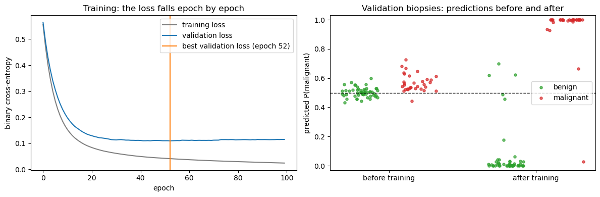
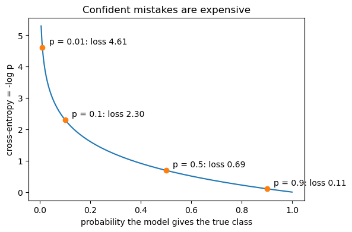
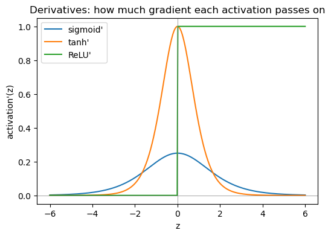
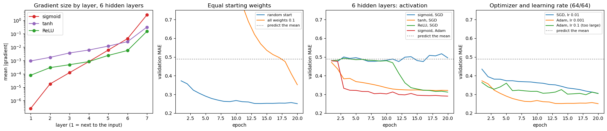
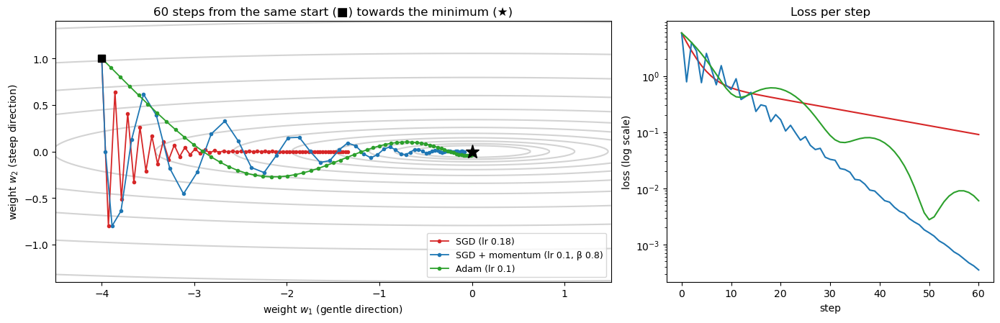
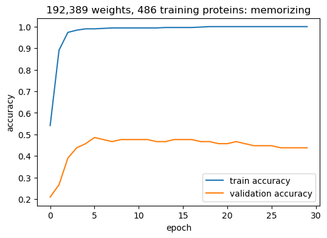
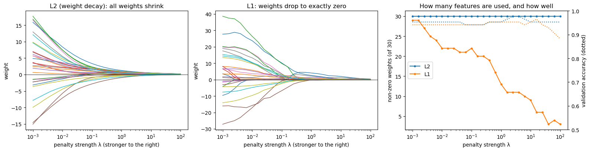

import re, os, shutil, subprocess, tempfile
import numpy as np
import requests
import torch
import torch.nn as nn
from sklearn.model_selection import train_test_split
from sklearn.metrics import (
confusion_matrix, precision_recall_fscore_support,
roc_auc_score, matthews_corrcoef,
)
torch.manual_seed(0)
np.random.seed(0)
from torch.utils.data import DataLoader, TensorDataset
from sklearn.datasets import load_breast_cancer
import pandas as pd, io, zipfile
from sklearn.linear_model import LogisticRegression, LinearRegression
from sklearn.model_selection import cross_val_score, StratifiedKFold
import matplotlib.pyplot as plt
FIGS = "../figs" if os.path.isdir("../figs") else "."Session 9 — How a neural network learns, and why training fails, in code
Session 8 built a network whose weights were random. This notebook turns random weights into useful predictions, and shows what goes wrong along the way. Its sections follow the Session 9 page:
- From an untrained to a trained network (breast-cancer biopsies).
- How backpropagation finds every gradient (by hand, checked against autograd).
- Which loss to minimize (cross-entropy, by hand).
- Why training fails: equal initial weights, vanishing gradients in deep sigmoid networks, and the choice of optimizer and learning rate (GB1 protein variants).
- When a hidden layer pays off: epistasis in the GB1 fitness landscape.
- Why not make the network enormous? Session 8’s localization network overfits, and a linear baseline wins.
1. From an untrained network to a trained network
The data: breast-cancer biopsies
The Wisconsin breast-cancer dataset: 569 fine-needle biopsies, each described by 30 features measured on images of the cell nuclei (radius, texture, perimeter, concavity… as mean, spread and worst value), labelled malignant or benign. It ships with scikit-learn (UCI Machine Learning Repository, CC BY 4.0).
Two habits from Session 8 come first: split before anything else, and fit the standardization (mean and standard deviation per feature) on the training set only, then apply it to validation and test.
bc = load_breast_cancer()
Xb, yb = bc.data.astype(np.float32), (bc.target == 0).astype(np.float32) # 1 = malignant
print(f"{Xb.shape[0]} biopsies, {Xb.shape[1]} features; {int(yb.sum())} malignant, {int((1 - yb).sum())} benign")
idx = np.arange(len(yb))
b_tr, b_tmp = train_test_split(idx, test_size=0.30, stratify=yb, random_state=0)
b_va, b_te = train_test_split(b_tmp, test_size=0.5, stratify=yb[b_tmp], random_state=0)
mu, sd = Xb[b_tr].mean(axis=0), Xb[b_tr].std(axis=0) # training set only
Xb_std = (Xb - mu) / sd
to_t = lambda a: torch.tensor(a, dtype=torch.float32)
Xb_tr, Xb_va, Xb_te = to_t(Xb_std[b_tr]), to_t(Xb_std[b_va]), to_t(Xb_std[b_te])
yb_tr, yb_va, yb_te = [to_t(yb[i]).reshape(-1, 1) for i in (b_tr, b_va, b_te)]
print(f"train {len(b_tr)} / val {len(b_va)} / test {len(b_te)}")569 biopsies, 30 features; 212 malignant, 357 benign
train 398 / val 85 / test 86Real training uses mini-batches: a DataLoader shuffles the training set every epoch and serves it in small batches, and the weights are updated after each batch. That gives many cheap, slightly noisy steps per epoch (stochastic gradient descent) instead of one expensive exact step. The four steps inside the loop are always the same: forward pass, loss, loss.backward(), optimizer.step().
The model has one hidden layer of 16 ReLU units and a single output logit. nn.BCEWithLogitsLoss is the two-class version of cross-entropy: it applies the sigmoid internally, just as nn.CrossEntropyLoss applies softmax.
def train(model, X_tr, y_tr, X_va, y_va, loss_fn, epochs, lr=1e-3, weight_decay=0.0,
batch_size=32, score=None, seed=0):
'''Mini-batch training with Adam. After every epoch, record the training and
validation score; keep the weights from the epoch with the best (lowest)
validation score -- early stopping. Returns the history and the best epoch.'''
torch.manual_seed(seed)
opt = torch.optim.Adam(model.parameters(), lr=lr, weight_decay=weight_decay)
loader = DataLoader(TensorDataset(X_tr, y_tr), batch_size=batch_size, shuffle=True,
generator=torch.Generator().manual_seed(seed))
score = score or (lambda out, y: loss_fn(out, y).item())
history, best = [], (float("inf"), None, -1)
for epoch in range(epochs):
model.train()
for xb, yb_ in loader:
opt.zero_grad() # 1. clear old gradients
loss = loss_fn(model(xb), yb_) # 2. forward pass + loss
loss.backward() # 3. backpropagation
opt.step() # 4. update every weight
model.eval()
with torch.no_grad():
tr, va = score(model(X_tr), y_tr), score(model(X_va), y_va)
history.append((tr, va))
if va < best[0]:
best = (va, {k: v.clone() for k, v in model.state_dict().items()}, epoch)
model.load_state_dict(best[1])
return history, best[2]
torch.manual_seed(0)
bc_net = nn.Sequential(nn.Linear(30, 16), nn.ReLU(), nn.Linear(16, 1))
bce = nn.BCEWithLogitsLoss()
bc_hist, bc_best = train(bc_net, Xb_tr, yb_tr, Xb_va, yb_va, bce, epochs=100)
print(f"parameters: {sum(p.numel() for p in bc_net.parameters())}")
print(f"best validation loss at epoch {bc_best}: {bc_hist[bc_best][1]:.3f}")
with torch.no_grad():
p_te = torch.sigmoid(bc_net(Xb_te)).numpy().ravel()
pred_te = (p_te > 0.5).astype(int)
yt = yb[b_te].astype(int)
print(f"\nTEST ({len(yt)} biopsies): accuracy {(pred_te == yt).mean():.3f}, "
f"MCC {matthews_corrcoef(yt, pred_te):.3f}, AUROC {roc_auc_score(yt, p_te):.3f}")
print("confusion matrix (rows true benign/malignant):\n", confusion_matrix(yt, pred_te))parameters: 513
best validation loss at epoch 52: 0.109
TEST (86 biopsies): accuracy 0.953, MCC 0.900, AUROC 0.984
confusion matrix (rows true benign/malignant):
[[52 2]
[ 2 30]]# The same network, with the same random starting weights, before any training
torch.manual_seed(0)
untrained = nn.Sequential(nn.Linear(30, 16), nn.ReLU(), nn.Linear(16, 1))
with torch.no_grad():
p_before = torch.sigmoid(untrained(Xb_va)).numpy().ravel()
p_after = torch.sigmoid(bc_net(Xb_va)).numpy().ravel()
y_va_np = yb[b_va].astype(int)
print(f"validation loss before training: {bce(untrained(Xb_va), yb_va).item():.3f} after: {bc_hist[bc_best][1]:.3f}")
print(f"validation accuracy before training: {((p_before > 0.5) == y_va_np).mean():.3f} "
f"after: {((p_after > 0.5) == y_va_np).mean():.3f}")
fig, axes = plt.subplots(1, 2, figsize=(12, 4))
tr_loss, va_loss = zip(*bc_hist)
axes[0].plot(tr_loss, color="grey", label="training loss")
axes[0].plot(va_loss, color="tab:blue", label="validation loss")
axes[0].axvline(bc_best, color="tab:orange", lw=1.5, label=f"best validation loss (epoch {bc_best})")
axes[0].set_xlabel("epoch"); axes[0].set_ylabel("binary cross-entropy"); axes[0].legend()
axes[0].set_title("Training: the loss falls epoch by epoch")
rng = np.random.RandomState(0)
for k, (p, label) in enumerate([(p_before, "before training"), (p_after, "after training")]):
for cls, col in [(0, "tab:green"), (1, "tab:red")]:
sel = y_va_np == cls
axes[1].scatter(k * 2 + cls * 0.8 + rng.uniform(-0.25, 0.25, sel.sum()), p[sel], s=14, alpha=0.7, color=col,
label=("benign" if cls == 0 else "malignant") if k == 0 else None)
axes[1].axhline(0.5, color="k", ls="--", lw=1)
axes[1].set_xticks([0.4, 2.4]); axes[1].set_xticklabels(["before training", "after training"])
axes[1].set_ylabel("predicted P(malignant)"); axes[1].set_ylim(-0.03, 1.03); axes[1].legend(loc="center right")
axes[1].set_title("Validation biopsies: predictions before and after")
plt.tight_layout()
plt.savefig(f"{FIGS}/session09-bc-training.png", dpi=150, bbox_inches="tight")
plt.show()validation loss before training: 0.651 after: 0.109
validation accuracy before training: 0.659 after: 0.953
Is the hidden layer needed? With only 86 test biopsies, one split is too noisy to compare two good models (Session 8), so compare them with 5-fold cross-validation on all 569 (standardization refitted inside each fold):
from sklearn.pipeline import make_pipeline
from sklearn.preprocessing import StandardScaler
from sklearn.neural_network import MLPClassifier
cv = StratifiedKFold(n_splits=5, shuffle=True, random_state=0)
lin_cv = cross_val_score(make_pipeline(StandardScaler(), LogisticRegression(max_iter=5000)), Xb, yb, cv=cv)
mlp_cv = cross_val_score(make_pipeline(StandardScaler(), MLPClassifier(hidden_layer_sizes=(16,), max_iter=2000,
random_state=0)), Xb, yb, cv=cv)
print(f"logistic regression (31 weights): accuracy {lin_cv.mean():.3f} +/- {lin_cv.std():.3f}")
print(f"MLP, 16 hidden units (513 weights): accuracy {mlp_cv.mean():.3f} +/- {mlp_cv.std():.3f}")logistic regression (31 weights): accuracy 0.979 +/- 0.014
MLP, 16 hidden units (513 weights): accuracy 0.979 +/- 0.020Both reach 0.979, within each other’s fold-to-fold noise. Malignant and benign nuclei differ mainly in size and shape, and a weighted sum of those measurements already separates them almost linearly. The training loop works; the hidden layer just has little left to add. (scikit-learn’s MLPClassifier is used here only because it plugs into cross_val_score. It runs the same kind of training loop internally.)
2. How backpropagation finds every gradient
Session 1 introduced the chain rule; a network with a hidden layer is exactly a composition of functions, \(\hat y = f_2(f_1(x))\), so training it needs the loss’s derivative with respect to every weight in both layers. Backpropagation is not a different algorithm from the chain rule — it is the chain rule, applied systematically from the output layer backward to the input layer, reusing each layer’s already-computed derivative rather than recomputing it from scratch. PyTorch’s loss.backward() does this automatically for a graph of any depth; that automation is why a framework rather than hand-written gradient descent (as in Session 7’s from-scratch notebook) becomes essential once a model has more than one layer.
Further reading
- Wikipedia, Backpropagation
A tiny worked example, by hand, verified against autograd
Real networks have thousands to hundreds of thousands of weights (Part 3’s classifier has 192,389), far too many to trace by hand. But the mechanics are identical however many weights there are, so here’s a miniature stand-in with the same structure (one hidden layer, then an output layer) shrunk to 2 inputs, 1 hidden unit (tanh), and 1 output unit (sigmoid), small enough to compute completely by hand — and then checked against what PyTorch’s own autograd computes for the exact same numbers, so this isn’t just illustrative, it’s a real verification that the by-hand chain-rule derivation is correct.
Forward pass: with hidden pre-activation \(z_g = w_{xg0} + w_{xg1} x_1 + w_{xg2} x_2\), hidden output \(y_g = \tanh(z_g)\), output pre-activation \(z_f = w_{gf0} + w_{gf1} y_g\), prediction \(y_f = \sigma(z_f)\), and squared-error loss \(E = \tfrac{1}{2}(y_{\text{truth}} - y_f)^2\):
def forward_two_layer(x1, x2, wxg0, wxg1, wxg2, wgf0, wgf1):
zg = wxg0 + wxg1 * x1 + wxg2 * x2
yg = np.tanh(zg)
zf = wgf0 + wgf1 * yg
yf = 1.0 / (1.0 + np.exp(-zf))
return zg, yg, zf, yf
# A small, arbitrary set of weights and one training example
wxg0, wxg1, wxg2 = 0.3, 0.6, -0.1
wgf0, wgf1 = -0.2, 0.5
x1, x2 = -0.9, 0.1
y_truth = 1.0
zg, yg, zf, yf = forward_two_layer(x1, x2, wxg0, wxg1, wxg2, wgf0, wgf1)
loss = 0.5 * (y_truth - yf) ** 2
print(f"zg = {zg:+.6f} yg = tanh(zg) = {yg:+.6f}")
print(f"zf = {zf:+.6f} yf = sigmoid(zf) = {yf:+.6f}")
print(f"loss = 0.5*(y_truth - yf)^2 = {loss:.6f}")zg = -0.250000 yg = tanh(zg) = -0.244919
zf = -0.322459 yf = sigmoid(zf) = +0.420077
loss = 0.5*(y_truth - yf)^2 = 0.168156Backward pass, by the chain rule, one layer at a time — starting from the loss and working back to the inputs, as backpropagation does for a network of any depth:
\[ \frac{\partial E}{\partial y_f} = -(y_{\text{truth}} - y_f) \qquad \frac{\partial y_f}{\partial z_f} = y_f(1-y_f) \qquad \frac{\partial E}{\partial z_f} = \frac{\partial E}{\partial y_f}\cdot\frac{\partial y_f}{\partial z_f} \]
That last quantity — the error signal at the output unit — is what gets reused (not recomputed) to get every gradient in the layer before it:
\[ \frac{\partial E}{\partial w_{gf1}} = \frac{\partial E}{\partial z_f}\cdot y_g \qquad \frac{\partial E}{\partial y_g} = \frac{\partial E}{\partial z_f}\cdot w_{gf1} \qquad \frac{\partial y_g}{\partial z_g} = 1-y_g^2 \qquad \frac{\partial E}{\partial z_g} = \frac{\partial E}{\partial y_g}\cdot\frac{\partial y_g}{\partial z_g} \]
\[ \frac{\partial E}{\partial w_{xg1}} = \frac{\partial E}{\partial z_g}\cdot x_1 \qquad \frac{\partial E}{\partial w_{xg2}} = \frac{\partial E}{\partial z_g}\cdot x_2 \]
def backward_two_layer(x1, x2, y_truth, yg, zf, yf, wgf1):
dE_dyf = -(y_truth - yf)
dyf_dzf = yf * (1.0 - yf)
dE_dzf = dE_dyf * dyf_dzf # error signal at the output unit
dE_dwgf0 = dE_dzf * 1.0
dE_dwgf1 = dE_dzf * yg
dE_dyg = dE_dzf * wgf1
dyg_dzg = 1.0 - yg ** 2
dE_dzg = dE_dyg * dyg_dzg # error signal at the hidden unit
dE_dwxg0 = dE_dzg * 1.0
dE_dwxg1 = dE_dzg * x1
dE_dwxg2 = dE_dzg * x2
return dict(wxg0=dE_dwxg0, wxg1=dE_dwxg1, wxg2=dE_dwxg2, wgf0=dE_dwgf0, wgf1=dE_dwgf1)
hand_grads = backward_two_layer(x1, x2, y_truth, yg, zf, yf, wgf1)
print("Gradients computed by hand, via the chain rule:")
for name, g in hand_grads.items():
print(f" dE/d{name} = {g:+.6f}")Gradients computed by hand, via the chain rule:
dE/dwxg0 = -0.066401
dE/dwxg1 = +0.059761
dE/dwxg2 = -0.006640
dE/dwgf0 = -0.141276
dE/dwgf1 = +0.034601Checking this against PyTorch’s own autograd — build the identical tiny network as real tensors with requires_grad=True, run the identical forward pass, call loss.backward(), and compare:
wxg0_t = torch.tensor(wxg0, requires_grad=True)
wxg1_t = torch.tensor(wxg1, requires_grad=True)
wxg2_t = torch.tensor(wxg2, requires_grad=True)
wgf0_t = torch.tensor(wgf0, requires_grad=True)
wgf1_t = torch.tensor(wgf1, requires_grad=True)
zg_t = wxg0_t + wxg1_t * x1 + wxg2_t * x2
yg_t = torch.tanh(zg_t)
zf_t = wgf0_t + wgf1_t * yg_t
yf_t = torch.sigmoid(zf_t)
loss_t = 0.5 * (y_truth - yf_t) ** 2
loss_t.backward()
autograd_grads = dict(wxg0=wxg0_t.grad.item(), wxg1=wxg1_t.grad.item(), wxg2=wxg2_t.grad.item(),
wgf0=wgf0_t.grad.item(), wgf1=wgf1_t.grad.item())
print(f"{'weight':8}{'by hand':>14}{'autograd':>14}{'match?':>10}")
for name in hand_grads:
h, a = hand_grads[name], autograd_grads[name]
print(f"{name:8}{h:>+14.8f}{a:>+14.8f}{'yes' if np.isclose(h, a) else 'NO':>10}")
assert all(np.isclose(hand_grads[n], autograd_grads[n]) for n in hand_grads), "hand-derived gradients do not match autograd!"
print("\nEvery hand-derived gradient matches autograd exactly.")weight by hand autograd match?
wxg0 -0.06640098 -0.06640099 yes
wxg1 +0.05976089 +0.05976089 yes
wxg2 -0.00664010 -0.00664010 yes
wgf0 -0.14127646 -0.14127646 yes
wgf1 +0.03460124 +0.03460124 yes
Every hand-derived gradient matches autograd exactly.Every gradient matches. This is the whole of backpropagation: the chain rule, applied systematically, reusing each layer’s error signal (\(\partial E/\partial z_f\), then \(\partial E/\partial z_g\)) rather than recomputing derivatives from scratch for every individual weight. Every loss.backward() below runs this algorithm — just with thousands of weights and several matrix layers instead of five scalars, which is why it needs automation rather than a hand-written backward_two_layer function.
Further watching
- 3Blue1Brown, What is backpropagation really doing? — the same idea as above, built up visually
- 3Blue1Brown, Backpropagation calculus — the chain-rule mechanics in full, for a general multi-layer network
3. Which loss to minimize: cross-entropy
For a classifier the output is a probability, and cross-entropy measures how far the predicted distribution is from the true one. For a single example it is
\[ \text{CE} = -\log p(\text{true class}) \]
— the negative log of the probability the model gave the correct answer. Confidently wrong is punished far more than hedged: probability 0.9 on the truth costs \(-\log(0.9) \approx 0.105\); probability 0.01 costs \(-\log(0.01) \approx 4.6\), over 40× worse. With two classes this is the binary cross-entropy used above. Checking nn.BCEWithLogitsLoss by hand on the breast-cancer validation set:
with torch.no_grad():
logit_va = bc_net(Xb_va)
p_va = torch.sigmoid(logit_va)
p_true = torch.where(yb_va == 1, p_va, 1 - p_va) # probability given to the true class
by_hand = -torch.log(p_true).mean().item()
pytorch = bce(logit_va, yb_va).item()
print(f"binary cross-entropy by hand: {by_hand:.6f}")
print(f"nn.BCEWithLogitsLoss: {pytorch:.6f}")
print("match:", abs(by_hand - pytorch) < 1e-6)binary cross-entropy by hand: 0.109216
nn.BCEWithLogitsLoss: 0.109216
match: Truep = np.linspace(0.005, 1, 400)
plt.figure(figsize=(6, 4))
plt.plot(p, -np.log(p), color="tab:blue")
for pt in (0.9, 0.5, 0.1, 0.01):
plt.plot(pt, -np.log(pt), "o", color="tab:orange")
plt.annotate(f"p = {pt}: loss {-np.log(pt):.2f}", (pt, -np.log(pt)), xytext=(8, 4), textcoords="offset points")
plt.xlabel("probability the model gives the true class"); plt.ylabel("cross-entropy = -log p")
plt.title("Confident mistakes are expensive")
plt.savefig(f"{FIGS}/session09-cross-entropy.png", dpi=150, bbox_inches="tight")
plt.show()
Exactly the same quantity. Part 3 repeats the check for the five-class version (nn.CrossEntropyLoss).
This is the same quantity Session 4 met from the other direction: cross-entropy is \(H(P, Q) = H(P) + D_{\text{KL}}(P \| Q)\), the true distribution’s own entropy plus the relative entropy (KL divergence) that Session 4 used to score alignments. Minimizing cross-entropy is minimizing that KL divergence between the model’s predictions and the true labels.
Further watching
4. Why training fails
Three ways a network can fail to learn, each shown by changing one thing. They use a protein fitness landscape: Wu et al. (2016) made all 20⁴ = 160,000 combinations of amino acids at four positions (V39, D40, G41, V54) of the IgG-binding domain GB1 of protein G, and measured how well each variant binds IgG; 149,361 variants have a value. Fitness is relative to the wild type (VDGV = 1) and spans several orders of magnitude, so we predict \(\log_{10}(\text{fitness} + 0.001)\). Each variant is the one-hot encoding of its four residues: 4 × 20 = 80 numbers.
For regression the output unit is linear, the loss is mean squared error, and we report the mean absolute error (MAE, in log10 units) and \(R^2\). We use 20,000 variants for training, 5,000 for validation and 20,000 for testing; Section 5 also varies the training-set size.
URL = "https://github.com/J-SNACKKB/FLIP/raw/main/splits/gb1/four_mutations_full_data.csv.zip"
CACHE = "session09-gb1.csv.gz"
CACHE_URL = "https://raw.githubusercontent.com/ElofssonLab/kb8029-book/main/notebooks/data/" + CACHE
try:
raw = requests.get(URL, timeout=60).content
gb1 = pd.read_csv(zipfile.ZipFile(io.BytesIO(raw)).open("four_mutations_full_data.csv"),
usecols=["Variants", "Fitness"])
source = "FLIP repository (live)"
except Exception as err:
print("FLIP not reachable:", err)
gb1 = pd.read_csv(os.path.join("data", CACHE) if os.path.exists(os.path.join("data", CACHE)) else CACHE_URL)
source = "cached copy"
print(f"{source}: {len(gb1)} variants; wild type VDGV fitness = {gb1.loc[gb1.Variants == 'VDGV', 'Fitness'].item()}")
AAS = "ACDEFGHIKLMNPQRSTVWY"
Xg = np.zeros((len(gb1), 80), dtype=np.float32) # one-hot: 4 positions x 20 amino acids
for i, variant in enumerate(gb1.Variants):
for pos, aa in enumerate(variant):
Xg[i, pos * 20 + AAS.index(aa)] = 1
yg = np.log10(gb1.Fitness.values + 0.001).astype(np.float32)
idx = np.arange(len(yg))
rest, g_te = train_test_split(idx, test_size=20000, random_state=0)
g_va, g_pool = rest[:5000], rest[5000:] # g_pool: everything else, for Section 5
g_tr = g_pool[:20000]
Xg_tr, Xg_va, Xg_te = to_t(Xg[g_tr]), to_t(Xg[g_va]), to_t(Xg[g_te])
yg_tr, yg_va, yg_te = [to_t(yg[i]).reshape(-1, 1) for i in (g_tr, g_va, g_te)]
print(f"train {len(g_tr)} / val {len(g_va)} / test {len(g_te)}; log10 fitness from {yg.min():.1f} to {yg.max():.2f}")FLIP repository (live): 149361 variants; wild type VDGV fitness = 1.0
train 20000 / val 5000 / test 20000; log10 fitness from -3.0 to 0.94mae = lambda out, y: (out - y).abs().mean().item()
def mlp(n_in, hidden=(64, 64), dropout=0.0):
layers, prev = [], n_in
for h in hidden:
layers += [nn.Linear(prev, h), nn.ReLU()] + ([nn.Dropout(dropout)] if dropout else [])
prev = h
return nn.Sequential(*layers, nn.Linear(prev, 1)) # linear output unit for regression
def run(make, epochs=20, optimizer="adam", lr=1e-3, constant_init=None, seed=0):
"""Train a GB1 model with mini-batches and record the validation MAE after every epoch."""
torch.manual_seed(seed)
model = make()
if constant_init is not None: # every weight and bias the same number
for p in model.parameters():
nn.init.constant_(p, constant_init)
opt = (torch.optim.Adam(model.parameters(), lr=lr) if optimizer == "adam"
else torch.optim.SGD(model.parameters(), lr=lr))
loader = DataLoader(TensorDataset(Xg_tr, yg_tr), batch_size=64, shuffle=True,
generator=torch.Generator().manual_seed(seed))
curve = []
for epoch in range(epochs):
model.train()
for xb, yb_ in loader:
opt.zero_grad(); nn.MSELoss()(model(xb), yb_).backward(); opt.step()
model.eval()
with torch.no_grad():
curve.append(mae(model(Xg_va), yg_va))
return model, curve
r2 = lambda out, y: 1 - ((out - y) ** 2).sum().item() / ((y - y.mean()) ** 2).sum().item()
baseline_mae = mae(torch.full_like(yg_va, yg_tr.mean().item()), yg_va)
print(f"predicting the training mean for every variant: validation MAE {baseline_mae:.3f}")predicting the training mean for every variant: validation MAE 0.488Failure 1: every weight starts the same
Observation. Start all weights at 0.1 instead of small random numbers. Why? Every hidden unit then computes the same thing and gets the same gradient, so the units stay identical for ever: 64 units behave like one. Fix. Random initialization breaks the symmetry.
m_const, curve_const = run(lambda: mlp(80), constant_init=0.1)
m_rand, curve_rand = run(lambda: mlp(80))
distinct = len(np.unique(m_const[0].weight.detach().numpy().round(5), axis=0))
print(f"equal start: distinct hidden units in layer 1 after training: {distinct} of 64; best validation MAE {min(curve_const):.3f}")
print(f"random start: best validation MAE {min(curve_rand):.3f}")equal start: distinct hidden units in layer 1 after training: 1 of 64; best validation MAE 0.352
random start: best validation MAE 0.250Failure 2: deep sigmoid networks and vanishing gradients
First: how much gradient does each activation pass on?
The chain rule multiplies one activation derivative per layer, so start with the derivatives of Session 8’s three activation functions:
import matplotlib.pyplot as plt
def sigmoid_np(x): return 1.0 / (1.0 + np.exp(-x))
def sigmoid_prime(x): return sigmoid_np(x) * (1 - sigmoid_np(x))
def tanh_prime(x): return 1 - np.tanh(x) ** 2
def relu_prime(x): return (x > 0).astype(float)
x = np.linspace(-6, 6, 400)
plt.figure(figsize=(6, 4))
plt.plot(x, sigmoid_prime(x), label="sigmoid'")
plt.plot(x, tanh_prime(x), label="tanh'")
plt.plot(x, relu_prime(x), label="ReLU'")
plt.axhline(0, color="grey", linewidth=0.5)
plt.axvline(0, color="grey", linewidth=0.5)
plt.legend()
plt.title("Derivatives: how much gradient each activation passes on")
plt.xlabel("z"); plt.ylabel("activation'(z)")
plt.savefig("../figs/session09-activation-derivatives.png" if os.path.isdir("../figs") else "session09-activation-derivatives.png",
dpi=150, bbox_inches="tight")
plt.show()
print("sigmoid'(0) =", sigmoid_prime(np.array([0.0]))[0], " sigmoid'(6) =", sigmoid_prime(np.array([6.0]))[0])
print("tanh'(0) =", tanh_prime(np.array([0.0]))[0], " tanh'(6) =", tanh_prime(np.array([6.0]))[0])
print("ReLU'(-1) =", relu_prime(np.array([-1.0]))[0], " ReLU'(1) =", relu_prime(np.array([1.0]))[0])
sigmoid'(0) = 0.25 sigmoid'(6) = 0.002466509291359931
tanh'(0) = 1.0 tanh'(6) = 2.4576547405286142e-05
ReLU'(-1) = 0.0 ReLU'(1) = 1.0| Activation | Range | Zero-centered? | Saturates? | Known problem |
|---|---|---|---|---|
| Sigmoid | \((0,1)\) | No | Both ends | Derivative at most 0.25, so gradients shrink at every layer |
| Tanh | \((-1,1)\) | Yes | Both ends | Still vanishes, though less severely (derivative up to 1.0) |
| ReLU | \([0,\infty)\) | No | Only for \(z<0\) (derivative exactly 0) | “Dying ReLU”: a unit stuck at \(z<0\) for every input never recovers |
Sigmoid’s derivative peaks at just 0.25 and is below 0.01 by \(|z| = 6\). Multiply a few of those together and almost nothing is left. ReLU’s derivative is exactly 1 for any positive input, so it never shrinks the gradient there. Its weakness is the flat side: Leaky ReLU (\(\max(0.01z, z)\)) and GELU (a smooth ReLU-like curve used in transformers) keep a small slope for \(z < 0\) to avoid dead units. Now the effect across six layers:
Observation. A network with six hidden layers of sigmoid units, trained with plain gradient descent (SGD), does not learn at all. Why? Backpropagation multiplies one activation derivative per layer, and sigmoid’s derivative is at most 0.25: the gradient that reaches the first layers is tiny. Fix. ReLU-like activations, sensible initialization, input standardization and normalization layers. Adam (Failure 3) gets the sigmoid network to learn somewhat by enlarging the tiny steps, but that is a workaround: the gradients still vanish.
class DeepNet(nn.Module):
def __init__(self, activation_cls, depth=6, width=64, input_dim=80):
super().__init__()
layers, d = [], input_dim
for _ in range(depth):
layers += [nn.Linear(d, width), activation_cls()]
d = width
layers += [nn.Linear(width, 1)]
self.layers = nn.Sequential(*layers)
def forward(self, x):
return self.layers(x)grad_by_layer = {}
for name, activation_cls in [("sigmoid", nn.Sigmoid), ("tanh", nn.Tanh), ("ReLU", nn.ReLU)]:
torch.manual_seed(0)
net = DeepNet(activation_cls)
loss = nn.MSELoss()(net(Xg_tr), yg_tr)
weight_params = [p for p in net.parameters() if p.dim() == 2]
grads = torch.autograd.grad(loss, weight_params)
grad_by_layer[name] = [g.abs().mean().item() for g in grads]
m = grad_by_layer[name]
print(f"{name:8s} mean |gradient| per layer, input side first: {[f'{x:.1e}' for x in m]}")
print(f" ratio output layer / first layer: {m[-1] / m[0]:.0f}x")
deep_curves = {}
for name, activation_cls in [("sigmoid", nn.Sigmoid), ("tanh", nn.Tanh), ("ReLU", nn.ReLU)]:
_, deep_curves[name] = run(lambda: DeepNet(activation_cls), optimizer="sgd", lr=0.01)
print(f"6 hidden layers, {name:7s}, SGD: best validation MAE {min(deep_curves[name]):.3f}")
_, deep_sigmoid_adam = run(lambda: DeepNet(nn.Sigmoid), optimizer="adam", lr=1e-3)
print(f"6 hidden layers, sigmoid, Adam: best validation MAE {min(deep_sigmoid_adam):.3f}")sigmoid mean |gradient| per layer, input side first: ['2.6e-07', '1.8e-05', '1.2e-04', '8.2e-04', '5.9e-03', '4.3e-02', '2.6e+00']
ratio output layer / first layer: 10022852x
tanh mean |gradient| per layer, input side first: ['9.2e-04', '1.7e-03', '3.6e-03', '6.0e-03', '1.2e-02', '2.6e-02', '3.2e-01']
ratio output layer / first layer: 343x
ReLU mean |gradient| per layer, input side first: ['7.8e-05', '2.9e-04', '4.8e-04', '8.2e-04', '2.4e-03', '5.5e-03', '1.5e-01']
ratio output layer / first layer: 1926x
6 hidden layers, sigmoid, SGD: best validation MAE 0.475
6 hidden layers, tanh , SGD: best validation MAE 0.321
6 hidden layers, ReLU , SGD: best validation MAE 0.312
6 hidden layers, sigmoid, Adam: best validation MAE 0.291With sigmoid, the gradient reaching the first layer is orders of magnitude smaller than at the output: those weights barely move under gradient descent. With ReLU the gradient shrinks far less across the same six layers, which is why ReLU (or a variant) is the default for hidden layers.
Three further tools against vanishing gradients: weight initialization scaled to each layer’s size (Xavier/Glorot for tanh, He for ReLU; PyTorch’s defaults already do something similar), input standardization (done above for both tabular datasets), and batch normalization (Ioffe & Szegedy, 2015), which re-standardizes the activations between layers during training.
Further reading
- Wikipedia, Vanishing gradient problem
- Ioffe & Szegedy (2015), “Batch Normalization,” arXiv:1502.03167
Failure 3: the optimizer and the learning rate
Observation. The same 64/64 network learns at very different speeds with different optimizers, and a too-large learning rate makes the validation error worse again. Why? The learning rate sets the step size of gradient descent (Session 1): too small is slow, too large overshoots. Adam adapts the step size for every weight. Fix. Start with Adam and a learning rate around \(10^{-3}\), and watch the validation curve.
opt_curves = {}
for label, opt, lr in [("SGD, lr 0.01", "sgd", 0.01), ("Adam, lr 0.001", "adam", 1e-3), ("Adam, lr 0.1 (too large)", "adam", 0.1)]:
_, opt_curves[label] = run(lambda: mlp(80), optimizer=opt, lr=lr)
print(f"{label:26s} best validation MAE {min(opt_curves[label]):.3f} last {opt_curves[label][-1]:.3f}")SGD, lr 0.01 best validation MAE 0.305 last 0.305
Adam, lr 0.001 best validation MAE 0.250 last 0.250
Adam, lr 0.1 (too large) best validation MAE 0.298 last 0.305fig, axes = plt.subplots(1, 4, figsize=(18, 4))
layers = np.arange(1, len(grad_by_layer["sigmoid"]) + 1)
for name, col in [("sigmoid", "tab:red"), ("tanh", "tab:purple"), ("ReLU", "tab:green")]:
axes[0].semilogy(layers, grad_by_layer[name], "o-", color=col, label=name)
axes[0].set_xlabel("layer (1 = next to the input)"); axes[0].set_ylabel("mean |gradient|")
axes[0].set_title("Gradient size by layer, 6 hidden layers"); axes[0].legend()
panels = [(axes[1], {"random start": curve_rand, "all weights 0.1": curve_const}, "Equal starting weights"),
(axes[2], {**{f"{k}, SGD": v for k, v in deep_curves.items()}, "sigmoid, Adam": deep_sigmoid_adam},
"6 hidden layers: activation"),
(axes[3], opt_curves, "Optimizer and learning rate (64/64)")]
for ax, curves, title in panels:
for label, c in curves.items():
ax.plot(np.arange(1, len(c) + 1), c, label=label)
ax.axhline(baseline_mae, color="grey", ls=":", label="predict the mean")
ax.set_ylim(0.2, 0.75); ax.set_xlabel("epoch"); ax.set_ylabel("validation MAE"); ax.set_title(title)
ax.legend(fontsize=8)
plt.tight_layout()
plt.savefig(f"{FIGS}/session09-training-failures.png", dpi=150, bbox_inches="tight")
plt.show()
Momentum and Adam: what makes an optimizer better than plain SGD?
Plain SGD steps straight down the current mini-batch gradient. In a long, narrow valley that gradient points mostly across the valley, so a large learning rate makes SGD zigzag from wall to wall (or blow up), and a safe one crawls along the valley floor.
- Momentum keeps a running average of recent gradients and steps along that. Across the valley the gradients alternate in sign and cancel; along it they agree and add up. Averaging also smooths out the noise of individual mini-batches.
- Adaptive step sizes divide each weight’s step by the typical size of its own recent gradients. A weight with tiny gradients (the gentle direction here) gets a larger step; a weight with huge gradients gets a smaller one.
- Adam (Kingma & Ba, 2015) does both, and corrects the averages for starting at zero. Its default learning rate of \(10^{-3}\) works for many networks, which is why it is the usual first choice.
The cell below implements all three in a few lines of NumPy, on a valley that is 100 times steeper across than along. Try other learning rates: how large can SGD’s be before it blows up?
# A long, narrow valley: the loss is 100 times steeper across (w2) than along (w1) it.
A = np.array([0.1, 10.0])
loss = lambda w: 0.5 * (A * w**2).sum()
grad = lambda w: A * w
def sgd(w, lr=0.18, steps=60):
path = [w]
for _ in range(steps):
w = w - lr * grad(w)
path.append(w)
return np.array(path)
def momentum(w, lr=0.1, beta=0.8, steps=60):
path, v = [w], np.zeros(2)
for _ in range(steps):
v = beta * v + grad(w) # running sum of recent gradients
w = w - lr * v
path.append(w)
return np.array(path)
def adam(w, lr=0.1, b1=0.9, b2=0.999, eps=1e-8, steps=60):
path, m, s = [w], np.zeros(2), np.zeros(2)
for t in range(1, steps + 1):
g = grad(w)
m = b1 * m + (1 - b1) * g # average gradient (momentum)
s = b2 * s + (1 - b2) * g**2 # average squared gradient (its typical size)
m_hat, s_hat = m / (1 - b1**t), s / (1 - b2**t) # correct the start-up bias
w = w - lr * m_hat / (np.sqrt(s_hat) + eps) # step ~ lr for every weight
path.append(w)
return np.array(path)
start = np.array([-4.0, 1.0])
paths = {"SGD (lr 0.18)": sgd(start), "SGD + momentum (lr 0.1, β 0.8)": momentum(start),
"Adam (lr 0.1)": adam(start)}
for name, p in paths.items():
print(f"{name:32s} loss after 10 steps {loss(p[10]):7.3f} after 60 steps {loss(p[-1]):.4f}")
fig, axes = plt.subplots(1, 2, figsize=(14, 4.6), gridspec_kw={"width_ratios": [1.7, 1]})
g1, g2 = np.meshgrid(np.linspace(-4.5, 1.5, 300), np.linspace(-1.4, 1.4, 200))
axes[0].contour(g1, g2, 0.5 * (A[0] * g1**2 + A[1] * g2**2), levels=np.geomspace(0.02, 30, 14), colors="lightgrey")
for (name, p), col in zip(paths.items(), ["tab:red", "tab:blue", "tab:green"]):
axes[0].plot(p[:, 0], p[:, 1], "o-", ms=3, lw=1.3, color=col, label=name)
axes[1].semilogy(np.arange(len(p)), [loss(w) for w in p], color=col, label=name)
axes[0].plot(0, 0, "k*", ms=14); axes[0].plot(*start, "ks", ms=7)
axes[0].set_xlabel("weight $w_1$ (gentle direction)"); axes[0].set_ylabel("weight $w_2$ (steep direction)")
axes[0].set_title("60 steps from the same start (■) towards the minimum (★)"); axes[0].legend(fontsize=9, loc="lower right")
axes[1].set_xlabel("step"); axes[1].set_ylabel("loss (log scale)"); axes[1].set_title("Loss per step")
plt.tight_layout()
plt.savefig(f"{FIGS}/session09-optimizers.png", dpi=150, bbox_inches="tight")
plt.show()SGD (lr 0.18) loss after 10 steps 0.614 after 60 steps 0.0905
SGD + momentum (lr 0.1, β 0.8) loss after 10 steps 0.574 after 60 steps 0.0004
Adam (lr 0.1) loss after 10 steps 0.482 after 60 steps 0.0060
6. Why not make the network enormous? Subcellular localization
Session 8’s dataset and network, rebuilt here so this notebook runs on its own: five UniProt localization classes, 140 proteins each, one-hot encoded (150 residues × 20 amino acids), and Session 8’s homology-aware split (MMseqs2 clusters at 30% identity, whole clusters per split).
UNIPROT_CLASSES = {
"Cytoplasm": "SL-0086",
"Nucleus": "SL-0191",
"Mitochondrion": "SL-0173",
"Secreted": "SL-0243",
"Cell membrane": "SL-0039",
}
CLASS_NAMES = list(UNIPROT_CLASSES.keys())
def fetch_uniprot(sl_code, size=500):
query = f"organism_id:9606 AND reviewed:true AND cc_scl_term:{sl_code} AND length:[50 TO 500]"
r = requests.get(
"https://rest.uniprot.org/uniprotkb/search",
params={"query": query, "fields": "accession,sequence,cc_subcellular_location",
"format": "tsv", "size": size},
timeout=60,
)
r.raise_for_status()
rows = []
for line in r.text.strip().split("\n")[1:]:
parts = line.split("\t")
if len(parts) == 3:
rows.append(tuple(parts)) # (accession, sequence, location_text)
return rows
def is_unambiguous_single_location(location_text, target):
'''Keep only entries whose SUBCELLULAR LOCATION comment names exactly
one location term (matching the target), ignoring free-text Notes,
evidence-code tags, and skipping isoform-specific annotations.'''
location_text = re.sub(r"Note=.*", "", location_text)
location_text = re.sub(r"\{[^}]*\}", "", location_text)
if "Isoform" in location_text:
return False
terms = set()
for statement in [s.strip() for s in location_text.split(".") if s.strip()]:
body = statement.split(":", 1)[-1] if ":" in statement else statement
top_term = re.split(r"[,;]", body)[0].strip()
if top_term:
terms.add(top_term)
return len(terms) == 1 and next(iter(terms)) == target
entries_by_class = {}
for class_name, sl_code in UNIPROT_CLASSES.items():
raw = fetch_uniprot(sl_code)
clean = [(acc, seq) for acc, seq, loc in raw if is_unambiguous_single_location(loc, class_name)]
entries_by_class[class_name] = clean
print(f"{class_name:15s} raw hits: {len(raw):4d} unambiguous single-location: {len(clean):4d}")
N_PER_CLASS = min(len(v) for v in entries_by_class.values())
rng = np.random.RandomState(0)
balanced_accs, balanced_seqs, balanced_labels = [], [], []
for class_idx, class_name in enumerate(CLASS_NAMES):
pool = entries_by_class[class_name]
for i in rng.choice(len(pool), N_PER_CLASS, replace=False):
balanced_accs.append(pool[i][0])
balanced_seqs.append(pool[i][1])
balanced_labels.append(class_idx)
AMINO_ACIDS = "ACDEFGHIKLMNPQRSTVWY"
AA_TO_INDEX = {aa: i for i, aa in enumerate(AMINO_ACIDS)}
SEQ_LEN = 150
def one_hot_encode(sequence, length=SEQ_LEN):
encoded = np.zeros((length, len(AMINO_ACIDS)), dtype=np.float32)
for position, residue in enumerate(sequence[:length]):
if residue in AA_TO_INDEX:
encoded[position, AA_TO_INDEX[residue]] = 1.0
return encoded.flatten()
X = np.stack([one_hot_encode(s) for s in balanced_seqs])
y = np.array(balanced_labels)
# Session 8's homology-aware split: MMseqs2 clusters at 30% identity, whole clusters per split
CLUSTER_URL = "https://raw.githubusercontent.com/ElofssonLab/kb8029-book/main/notebooks/data/session08-subcell-mmseqs-30.tsv"
LOCAL_TSV = "data/session08-subcell-mmseqs-30.tsv"
def mmseqs_clusters(accs, seqs, min_seq_id=0.3):
tmp = tempfile.mkdtemp()
with open(f"{tmp}/in.fasta", "w") as f:
for a, s in zip(accs, seqs):
f.write(f">{a}\n{s}\n")
subprocess.run(["mmseqs", "easy-cluster", f"{tmp}/in.fasta", f"{tmp}/clu", f"{tmp}/work",
"--min-seq-id", str(min_seq_id), "-c", "0.5", "-v", "1"],
check=True, stdout=subprocess.DEVNULL)
pairs = [line.split("\t") for line in open(f"{tmp}/clu_cluster.tsv").read().split("\n") if line]
shutil.rmtree(tmp)
return {member: rep for rep, member in pairs}
def load_precomputed_clusters():
text = open(LOCAL_TSV).read() if os.path.exists(LOCAL_TSV) else requests.get(CLUSTER_URL, timeout=30).text
pairs = [line.split("\t") for line in text.strip().split("\n")[1:]]
return {member: rep for rep, member in pairs}
if shutil.which("mmseqs"):
member_to_rep = mmseqs_clusters(balanced_accs, balanced_seqs)
print("clustered with local MMseqs2 (30% identity, 50% coverage)")
else:
member_to_rep = load_precomputed_clusters()
print("mmseqs not found -- loaded the precomputed MMseqs2 clustering")
# proteins missing from the clustering (e.g. if UniProt changed) become their own cluster
reps = [member_to_rep.get(a, a) for a in balanced_accs]
rep_ids = {r: i for i, r in enumerate(sorted(set(reps)))}
groups = np.array([rep_ids[r] for r in reps])
sizes = np.bincount(groups)
print(f"{len(y)} proteins -> {len(sizes)} clusters; "
f"{(sizes > 1).sum()} clusters have more than one member ({sizes[sizes > 1].sum()} proteins), largest has {sizes.max()}")
def homology_split(y, groups, fractions=(0.70, 0.15, 0.15), seed=0):
'''Assign whole clusters, in random order, to train/val/test: each cluster
goes to the split furthest below its target share of that cluster's
classes (ties broken at random). Returns three index arrays.'''
rng = np.random.RandomState(seed)
n_classes = y.max() + 1
target = np.outer(fractions, np.bincount(y, minlength=n_classes)) # (3 splits, n_classes)
have = np.zeros_like(target)
assignment = {}
for g in rng.permutation(np.unique(groups)):
cls_counts = np.bincount(y[groups == g], minlength=n_classes)
deficit = ((target - have) * (cls_counts > 0)).sum(axis=1) / target.sum(axis=1)
best = np.flatnonzero(deficit == deficit.max())
split = int(rng.choice(best))
assignment[g] = split
have[split] += cls_counts
split_of = np.array([assignment[g] for g in groups])
return [np.where(split_of == k)[0] for k in range(3)]
tr_h, va_h, te_h = homology_split(y, groups)
X_train, y_train = X[tr_h], y[tr_h]
X_val, y_val = X[va_h], y[va_h]
X_test, y_test = X[te_h], y[te_h]
X_train_t = torch.tensor(X_train, dtype=torch.float32)
y_train_t = torch.tensor(y_train, dtype=torch.long)
X_val_t = torch.tensor(X_val, dtype=torch.float32)
X_test_t = torch.tensor(X_test, dtype=torch.float32)
print(f"dataset rebuilt: {len(balanced_seqs)} sequences, {N_PER_CLASS} per class")
print(f"homology-aware split -- train: {len(X_train)} val: {len(X_val)} test: {len(X_test)}")
class SubcellularLocalizationClassifier(nn.Module):
def __init__(self, input_dim=SEQ_LEN * len(AMINO_ACIDS), hidden_dim=64, n_classes=5, dropout=0.0):
super().__init__()
self.net = nn.Sequential(
nn.Linear(input_dim, hidden_dim),
nn.ReLU(),
nn.Dropout(dropout),
nn.Linear(hidden_dim, n_classes),
)
def forward(self, x):
return self.net(x)
print("model class ready:", SubcellularLocalizationClassifier().net)Cytoplasm raw hits: 500 unambiguous single-location: 424
Nucleus raw hits: 500 unambiguous single-location: 497
Mitochondrion raw hits: 500 unambiguous single-location: 140
Secreted raw hits: 500 unambiguous single-location: 488
Cell membrane raw hits: 500 unambiguous single-location: 338
clustered with local MMseqs2 (30% identity, 50% coverage)
700 proteins -> 551 clusters; 75 clusters have more than one member (224 proteins), largest has 11
dataset rebuilt: 700 sequences, 140 per class
homology-aware split -- train: 486 val: 105 test: 109
model class ready: Sequential(
(0): Linear(in_features=3000, out_features=64, bias=True)
(1): ReLU()
(2): Dropout(p=0.0, inplace=False)
(3): Linear(in_features=64, out_features=5, bias=True)
)Training it, unregularized
torch.manual_seed(0)
model_plain = SubcellularLocalizationClassifier(dropout=0.0)
optimizer = torch.optim.Adam(model_plain.parameters(), lr=1e-3)
loss_fn = nn.CrossEntropyLoss()
history = [] # full-batch here: 486 examples fit in one step
for epoch in range(30):
model_plain.train()
optimizer.zero_grad()
logits = model_plain(X_train_t)
loss = loss_fn(logits, y_train_t)
loss.backward()
optimizer.step()
model_plain.eval()
with torch.no_grad():
train_acc = (model_plain(X_train_t).argmax(1).numpy() == y_train).mean()
val_acc = (model_plain(X_val_t).argmax(1).numpy() == y_val).mean()
history.append((epoch, loss.item(), train_acc, val_acc))
if epoch % 5 == 0 or epoch == 29:
print(f"epoch {epoch:2d}: loss {loss.item():.3f} train acc {train_acc:.3f} val acc {val_acc:.3f}")epoch 0: loss 1.611 train acc 0.541 val acc 0.210
epoch 5: loss 1.261 train acc 0.990 val acc 0.486
epoch 10: loss 0.878 train acc 0.994 val acc 0.476
epoch 15: loss 0.549 train acc 0.996 val acc 0.476
epoch 20: loss 0.317 train acc 1.000 val acc 0.457
epoch 25: loss 0.175 train acc 1.000 val acc 0.448
epoch 29: loss 0.109 train acc 1.000 val acc 0.438import matplotlib.pyplot as plt
epochs, losses, train_accs, val_accs = zip(*history)
plt.figure(figsize=(6, 4))
plt.plot(epochs, train_accs, label="train accuracy")
plt.plot(epochs, val_accs, label="validation accuracy")
plt.xlabel("epoch"); plt.ylabel("accuracy"); plt.legend()
plt.title("192,389 weights, 486 training proteins: memorizing")
plt.savefig(f"{FIGS}/session09-localization-overfitting.png", dpi=150, bbox_inches="tight")
plt.show()
print(f"final train accuracy: {train_accs[-1]:.3f} final val accuracy: {val_accs[-1]:.3f}")
peak = int(np.argmax(val_accs))
print(f"peak val accuracy: {val_accs[peak]:.3f} at epoch {peak}")
final train accuracy: 1.000 final val accuracy: 0.438
peak val accuracy: 0.486 at epoch 5Training accuracy reaches essentially 100% while validation accuracy plateaus far below it — classic overfitting. This dataset makes it almost inevitable: 486 training examples against a 3000-dimensional input and ~190,000 parameters gives the network far more freedom than data, so it memorizes idiosyncrasies of the specific training sequences rather than learning the general signal. This is the problem the regularization techniques below exist to fight.
Further reading
- Wikipedia, Overfitting
The five-class cross-entropy, checked by hand
nn.CrossEntropyLoss applies softmax to the five logits and takes \(-\log p(\text{true class})\), just like the binary version in Part 1:
model_plain.eval()
y_val_t = torch.tensor(y_val, dtype=torch.long)
with torch.no_grad():
logits_val = model_plain(X_val_t)
probs_val = torch.softmax(logits_val, dim=1)
true_class_probs = probs_val[torch.arange(len(y_val_t)), y_val_t]
by_hand_ce = -torch.log(true_class_probs).mean().item()
pytorch_ce = loss_fn(logits_val, y_val_t).item()
print(f"Cross-entropy computed by hand: {by_hand_ce:.6f}")
print(f"nn.CrossEntropyLoss() value: {pytorch_ce:.6f}")
print(f"Match to 6 decimal places: {abs(by_hand_ce - pytorch_ce) < 1e-6}")Cross-entropy computed by hand: 1.305748
nn.CrossEntropyLoss() value: 1.305748
Match to 6 decimal places: TrueMatches exactly: nn.CrossEntropyLoss() computes this quantity.
Regularization: dropout, L2, and early stopping
Three practical tools against the overfitting seen above:
- Dropout randomly zeroes a fraction of a layer’s activations during each training step, preventing the network from relying too heavily on any single unit.
- L2 regularization (a.k.a. weight decay) adds a penalty proportional to the square of the weights to the loss, discouraging any single weight from growing large; PyTorch applies it via the optimizer’s
weight_decayargument, not a separate loss term. L1 regularization (Lasso) uses the absolute value instead, and tends to push some weights to exactly zero rather than just shrinking all of them. - Early stopping — simply not training past the epoch where validation performance peaks — costs nothing extra to implement and is often the single most effective fix.
torch.manual_seed(0)
model_reg = SubcellularLocalizationClassifier(dropout=0.5)
optimizer = torch.optim.Adam(model_reg.parameters(), lr=1e-3, weight_decay=1e-3) # L2 via weight_decay
loss_fn = nn.CrossEntropyLoss()
best_val_acc, best_epoch, best_state = 0.0, 0, None
history_reg = []
for epoch in range(100):
model_reg.train()
optimizer.zero_grad()
logits = model_reg(X_train_t)
loss = loss_fn(logits, y_train_t)
loss.backward()
optimizer.step()
model_reg.eval()
with torch.no_grad():
train_acc = (model_reg(X_train_t).argmax(1).numpy() == y_train).mean()
val_acc = (model_reg(X_val_t).argmax(1).numpy() == y_val).mean()
history_reg.append((epoch, train_acc, val_acc))
if val_acc > best_val_acc:
best_val_acc, best_epoch = val_acc, epoch
best_state = {k: v.clone() for k, v in model_reg.state_dict().items()}
print(f"best validation accuracy: {best_val_acc:.3f}, reached at epoch {best_epoch}")
print(f"training accuracy at end of the full 100-epoch run: {history_reg[-1][1]:.3f}")
model_reg.load_state_dict(best_state) # roll back to the early-stopped weightsbest validation accuracy: 0.476, reached at epoch 13
training accuracy at end of the full 100-epoch run: 1.000<All keys matched successfully>Training accuracy still reaches 100% by the end: with ~190,000 parameters and 486 training examples, the model can memorize the training set whatever we do. What helps is early stopping. The unregularized run peaked at 0.486 validation accuracy (epoch 5) and had sunk to 0.438 by epoch 29. Rolling back to the best epoch keeps the network near its peak. Adding dropout and L2 did not improve on that peak here (0.476 at epoch 13, vs. 0.486 without them). Regularization is not a substitute for having enough data relative to model size. This is a real limitation of this small, deliberately simple case study, and part of why production tools for this problem (e.g. DeepLoc) use much larger training sets and more parameter-efficient input representations than a flattened one-hot encoding.
Further reading
L1 and L2 side by side: which features survive?
Back to the 30 biopsy features of Section 1, with the simplest classifier, logistic regression, so that every feature has exactly one weight we can watch. The loss is the cross-entropy plus a penalty of strength \(\lambda\):
- L2: \(\lambda \sum_j w_j^2\). Its gradient, \(2\lambda w_j\), pulls each weight towards zero in proportion to its size, so every step shrinks every weight by the same fraction (hence “weight decay”). Weights get small, but almost never exactly zero.
- L1: \(\lambda \sum_j |w_j|\). Its gradient, \(\pm\lambda\), pulls with the same force however small the weight already is, so weights that help little are pushed all the way to exactly zero: the model selects features.
Below, both are fitted for 26 values of \(\lambda\) (scikit-learn’s LogisticRegression, whose C is \(1/\lambda\)), and \(\lambda\) is chosen on the validation set.
import warnings
from sklearn.linear_model import LogisticRegression
warnings.simplefilter("ignore") # scikit-learn 1.8 renames 'penalty'; the old name still works
lambdas = np.logspace(-3, 2, 26) # penalty strength; scikit-learn's C is 1 / lambda
reg_paths, reg_val_acc = {}, {}
for pen in ["l2", "l1"]:
reg_coefs, reg_accs = [], []
for lam in lambdas:
clf = LogisticRegression(penalty=pen, C=1 / lam, solver="liblinear", max_iter=5000, random_state=0)
clf.fit(Xb_std[b_tr], yb[b_tr])
reg_coefs.append(clf.coef_.ravel()); reg_accs.append(clf.score(Xb_std[b_va], yb[b_va]))
reg_paths[pen], reg_val_acc[pen] = np.array(reg_coefs), np.array(reg_accs)
for pen in ["l2", "l1"]:
best_lam = int(np.argmax(reg_val_acc[pen] + 1e-6 * np.arange(len(lambdas)))) # ties: the stronger penalty
n_nonzero = int((np.abs(reg_paths[pen][best_lam]) > 1e-8).sum())
clf = LogisticRegression(penalty=pen, C=1 / lambdas[best_lam], solver="liblinear", max_iter=5000, random_state=0).fit(Xb_std[b_tr], yb[b_tr])
print(f"{pen.upper()}: best lambda {lambdas[best_lam]:.3g} val acc {reg_val_acc[pen][best_lam]:.3f} non-zero weights {n_nonzero} of 30 TEST acc {clf.score(Xb_std[b_te], yb[b_te]):.3f}")
if pen == "l1":
kept = np.argsort(-np.abs(clf.coef_.ravel()))[:n_nonzero]
print(" features kept:", ", ".join(f"{bc.feature_names[i]} ({clf.coef_.ravel()[i]:+.2f})" for i in kept))
for lam in [0.001, 0.1, 1.0]:
k = int(np.argmin(np.abs(lambdas - lam)))
print(f"lambda {lambdas[k]:.3g}: non-zero L1 {int((np.abs(reg_paths['l1'][k])>1e-8).sum())}, L2 {int((np.abs(reg_paths['l2'][k])>1e-8).sum())}; largest |w| L1 {np.abs(reg_paths['l1'][k]).max():.2f} L2 {np.abs(reg_paths['l2'][k]).max():.2f}")
fig, axes = plt.subplots(1, 3, figsize=(16, 4.2))
for ax, pen, title in [(axes[0], "l2", "L2 (weight decay): all weights shrink"), (axes[1], "l1", "L1: weights drop to exactly zero")]:
ax.semilogx(lambdas, reg_paths[pen], lw=1)
ax.axhline(0, color="black", lw=0.6)
ax.set_xlabel("penalty strength λ (stronger to the right)"); ax.set_ylabel("weight"); ax.set_title(title)
n_nonzero = {pen: (np.abs(reg_paths[pen]) > 1e-8).sum(1) for pen in reg_paths}
axes[2].semilogx(lambdas, n_nonzero["l2"], "o-", ms=3, label="L2"); axes[2].semilogx(lambdas, n_nonzero["l1"], "o-", ms=3, label="L1")
axes[2].set_xlabel("penalty strength λ (stronger to the right)"); axes[2].set_xlabel("penalty strength λ"); axes[2].set_ylabel("non-zero weights (of 30)")
ax2 = axes[2].twinx(); ax2.semilogx(lambdas, reg_val_acc["l2"], ":", color="tab:blue"); ax2.semilogx(lambdas, reg_val_acc["l1"], ":", color="tab:orange")
ax2.set_ylabel("validation accuracy (dotted)"); ax2.set_ylim(0.5, 1.0)
axes[2].legend(loc="center left"); axes[2].set_title("How many features are used, and how well")
plt.tight_layout(); plt.savefig(f"{FIGS}/session09-l1-l2.png", dpi=150, bbox_inches="tight")
plt.show()L2: best lambda 3.98 val acc 0.976 non-zero weights 30 of 30 TEST acc 0.965
L1: best lambda 15.8 val acc 0.965 non-zero weights 6 of 30 TEST acc 0.942
features kept: worst radius (+1.54), mean concave points (+1.08), worst concave points (+0.44), worst texture (+0.28), worst smoothness (+0.23), worst symmetry (+0.10)
lambda 0.001: non-zero L1 29, L2 30; largest |w| L1 38.63 L2 17.71
lambda 0.1: non-zero L1 22, L2 30; largest |w| L1 10.15 L2 3.35
lambda 1: non-zero L1 13, L2 30; largest |w| L1 4.04 L2 1.26
Dropout: switched on for training, off for predicting
nn.Dropout(p) sets each of its inputs to zero with probability p, a fresh random choice in every forward pass, and multiplies the surviving ones by \(1/(1-p)\) so that their sum stays the same on average. It does this only in training mode. model.eval() switches it off, and model.train() switches it back on: that is why every training loop in this course calls the two. Watch one dropout layer, and then a whole network, in the two modes:
torch.manual_seed(0)
drop = nn.Dropout(p=0.5)
x = torch.ones(1, 8)
drop.train()
for call in range(3):
print(f"train mode, call {call + 1}: {drop(x).numpy().ravel()}")
drop.eval()
print(f"eval mode: {drop(x).numpy().ravel()}")
net = nn.Sequential(nn.Linear(30, 16), nn.ReLU(), nn.Dropout(0.5), nn.Linear(16, 1))
biopsy = Xb_te[:1] # one test biopsy
net.train()
print("\nsame biopsy, network in train mode:", [round(net(biopsy).item(), 3) for _ in range(4)])
net.eval()
print("same biopsy, network in eval mode: ", [round(net(biopsy).item(), 3) for _ in range(4)])train mode, call 1: [2. 0. 0. 2. 2. 0. 0. 2.]
train mode, call 2: [2. 2. 2. 0. 2. 2. 0. 0.]
train mode, call 3: [2. 2. 2. 2. 0. 2. 0. 2.]
eval mode: [1. 1. 1. 1. 1. 1. 1. 1.]
same biopsy, network in train mode: [0.238, 0.297, 0.137, 0.3]
same biopsy, network in eval mode: [0.345, 0.345, 0.345, 0.345]Evaluating the trained model
The epoch was chosen on the validation set, so validation accuracy is now slightly optimistic (Session 8). The final, honest numbers come from the test set, used here for the first and only time. They are directly comparable to Session 8’s untrained baseline.
model_reg.eval()
with torch.no_grad():
val_acc_final = (model_reg(X_val_t).argmax(1).numpy() == y_val).mean()
test_logits = model_reg(X_test_t)
predicted_classes = test_logits.argmax(dim=1).numpy()
predicted_probs = torch.softmax(test_logits, dim=1).numpy()
print(f"validation accuracy (used to pick the epoch): {val_acc_final:.3f}")
accuracy = (predicted_classes == y_test).mean()
print(f"TEST accuracy: {accuracy:.3f} (chance: 0.20)")
cm = confusion_matrix(y_test, predicted_classes)
print("\nconfusion matrix on the test set (rows = true class, columns = predicted class):")
print("classes:", CLASS_NAMES)
print(cm)
precision, recall, f1, _ = precision_recall_fscore_support(
y_test, predicted_classes, average="macro", zero_division=0
)
print(f"\nprecision: {precision:.3f} recall: {recall:.3f} F1: {f1:.3f}")
print(f"MCC: {matthews_corrcoef(y_test, predicted_classes):.3f}")
print(f"AUROC: {roc_auc_score(y_test, predicted_probs, multi_class='ovr'):.3f}")validation accuracy (used to pick the epoch): 0.476
TEST accuracy: 0.514 (chance: 0.20)
confusion matrix on the test set (rows = true class, columns = predicted class):
classes: ['Cytoplasm', 'Nucleus', 'Mitochondrion', 'Secreted', 'Cell membrane']
[[ 6 10 2 0 3]
[ 5 8 2 3 3]
[ 4 3 7 2 5]
[ 1 2 3 18 1]
[ 0 1 0 3 17]]
precision: 0.497 recall: 0.506 F1: 0.493
MCC: 0.394
AUROC: 0.831Try it yourself
- In Section 5, try
hidden=(8,)(one small hidden layer). How much of the gain over the linear model remains? - In Section 6, try
hidden_dim=16. A smaller network has fewer weights per example; does it close the gap to logistic regression?